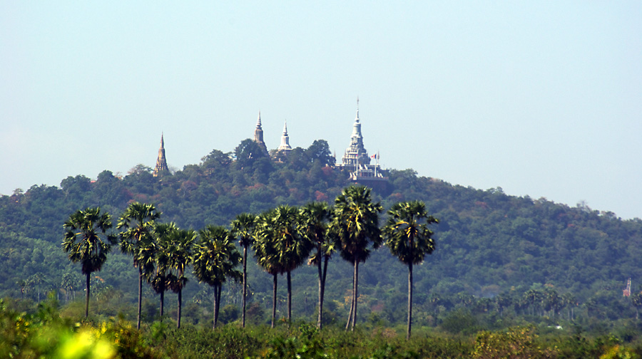

Kandal (Khmer: កណ្ដាល,'Middle') is a province of Cambodia located in the southeast portion of the country. It completely surrounds the Cambodian capital of Phnom Penh and borders the provinces of Kampong Speu and Takéo to the west, Kampong Chhnang and Kampong Cham to the north, Prey Veng to the east, and shares an international border with Vietnam (An Giang and Đồng Tháp) to the south. It is the second most populous province in Cambodia after the capital Phnom Penh. Its capital and largest city is Ta Khmau, which is approximately eight kilometres (5.0 mi) south of central Phnom Penh. Kandal is one of the wealthier provinces in the country.
